Definición
Es un sistema que integra a todos los departamentos para que tengan una comunicación entre sí.
Este sistema permite que si hay un cambio en un departamento se actualice y/o avise a los otros departamentos que dependen o son afectados por ese cambio, asegurando un funcionamiento correcto y evitando fallos por descuidos a la hora de actualizar datos.
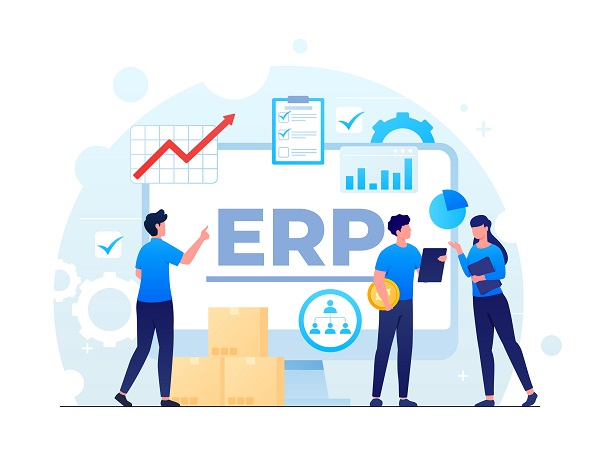
¿Para qué sirve?
Su función principal es conectar los departamentos que requieren una comunicación por dependencias de datos, asegurando que la información llegue correctamente.
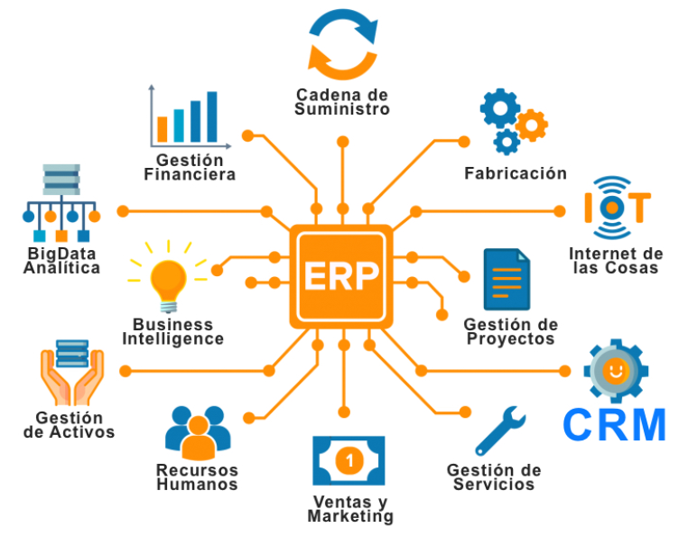
Funciones principales
- Automatización de procesos. Cuando se registra una venta o el stock de un producto llega a un mínimo se envía una notificación al respectivo módulo (departamento) para que lo tengan en cuenta.
- Ejemplo de Stock: Se le enviará una notificación al almacén avisando que quedan pocas unidades del producto.
Módulos de un ERP
Los módulos son los bloques funcionales del sistema. Pulsa cada uno para ver más detalles:
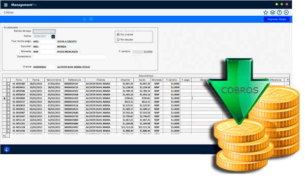
class="accordion-header">
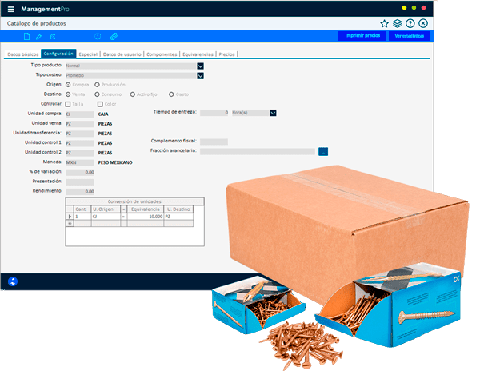
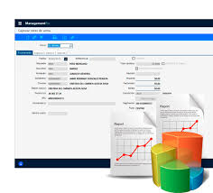
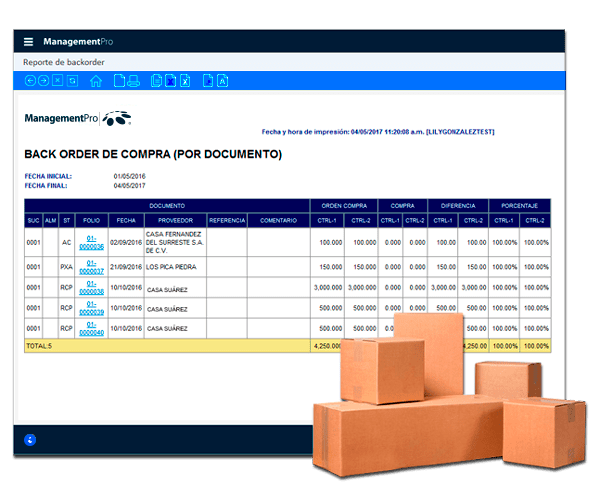
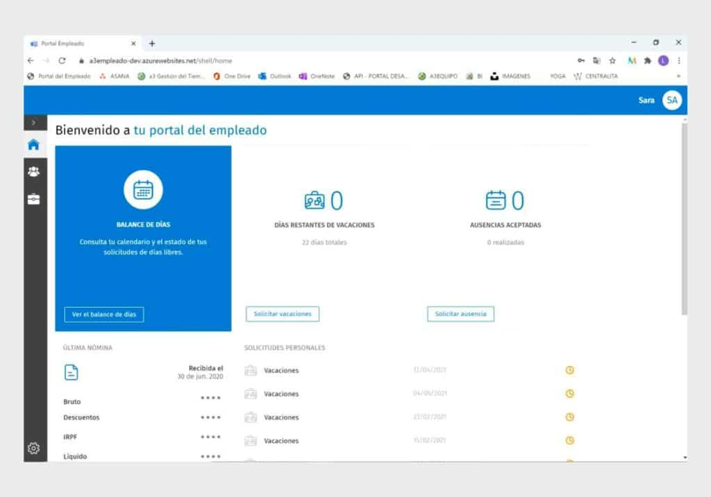
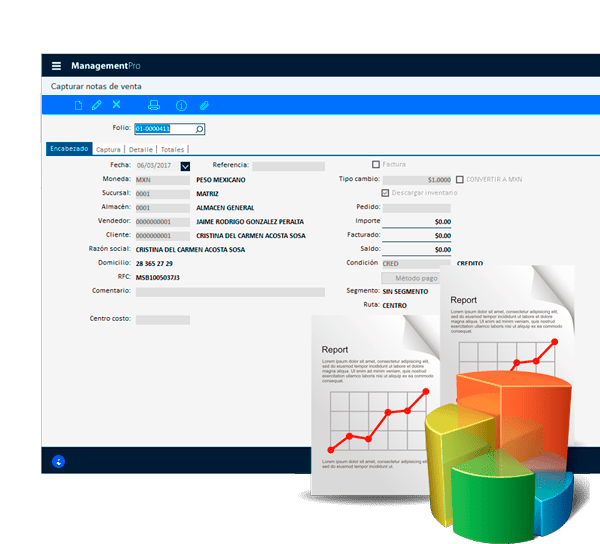
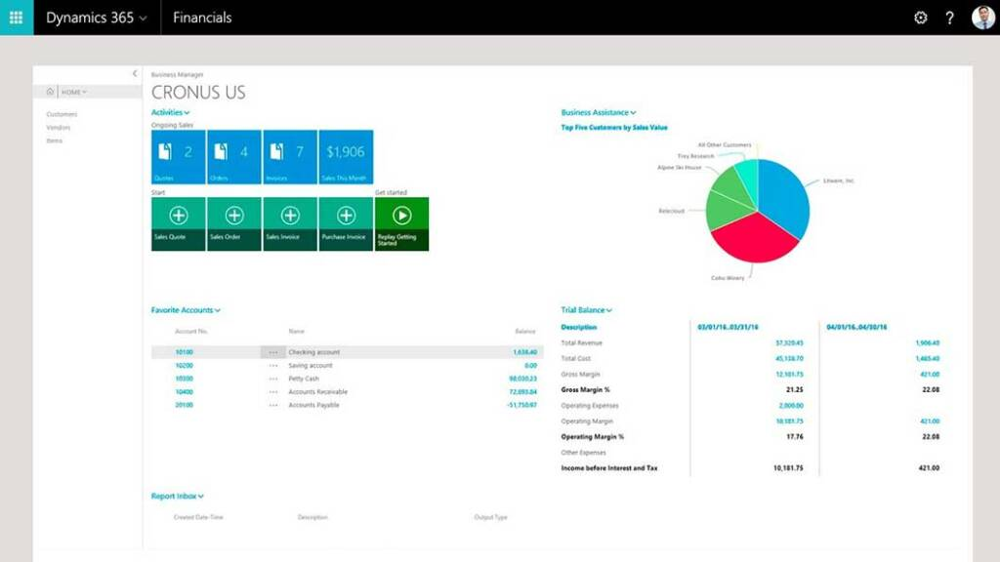
No puedes instalar cualquier módulo. Depende de la licencia, la compatibilidad y si tiene sentido para tu negocio.
¿Puedo instalar cualquier módulo?
No necesariamente. Depende de la licencia contratada, de si el módulo es compatible con la versión del ERP que tienes, y sobre todo de si tiene sentido para tu negocio. Instalar un módulo de fabricación en una empresa de servicios no aporta nada y complica el sistema.
¿Cómo los clasificarías?
Se pueden agrupar en tres tipos:
- Básicos → Los que necesita cualquier empresa sin importar su sector: finanzas, ventas, compras y RRHH.
- Opcionales → Los que dependen de la actividad de la empresa, como producción o gestión de inventarios.
- Verticales → Diseñados para un sector concreto, como trazabilidad en alimentación o gestión de camas en sanidad.
¿Puedo instalar cualquier módulo?
No necesariamente. Depende de la licencia contratada, de si el módulo es compatible con la versión del ERP que tienes, y sobre todo de si tiene sentido para tu negocio. Instalar un módulo de fabricación en una empresa de servicios no aporta nada y complica el sistema.
¿Qué es la integración de módulos y por qué es beneficiosa?
La integración de módulos es la capacidad del ERP para que todos los bloques funcionales compartan la misma base de datos y se comuniquen entre sí de forma automática, sin que nadie tenga que introducir los datos dos veces.
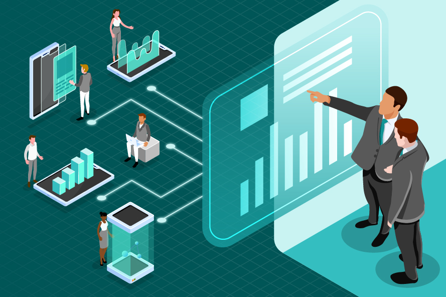
Toda la información en un mismo sitio: las ventas de la empresa, las variaciones de stock, los horarios de los empleados...
En vez de gastar horas con excels separados, tienes toda la información en un único lugar actualizada en tiempo real.

Si vendo un producto, llega mercancía al almacén y el sistema actualiza el inventario automáticamente. No hay que tocarlo a mano.
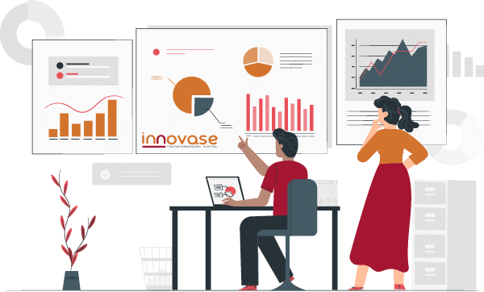
Informes y reportes claros para ver cómo va el negocio. Por ejemplo, detectar que cada diciembre se dispara la demanda de un producto y adelantar el pedido a proveedores antes de quedarte sin stock.
Beneficios frente a otros enfoques
01
Integración de datos
Eliminación de silos de datos: A diferencia de otros enfoques donde cada departamento tiene su propio sistema, el ERP centraliza la información.
Consistencia de la información: Proporciona una única fuente, garantizando que todos trabajen con los mismos datos.
02
Eficiencia y productividad
Automatización de procesos: Permite automatizar tareas manuales, liberando tiempo para actividades de mayor valor.
03
Visibilidad y decisiones
Información en tiempo real: Ofrece una visión completa y actualizada de las operaciones.
Informes y análisis: Facilita reportes precisos para mejorar la toma de decisiones.
04
Reducción de costes
Ahorro de costes de TI: Reduce gastos en licencias y mantenimiento.
Gestión de riesgos: Mejora el control financiero y el cumplimiento normativo.
05
Agilidad y crecimiento
Escalabilidad: El sistema crece junto con la empresa.
Agilidad: Permite adaptarse rápidamente a cambios del entorno.
06
Experiencia del cliente
Mejor servicio: Acceso rápido a datos de pedidos, inventarios y clientes para respuestas más precisas.